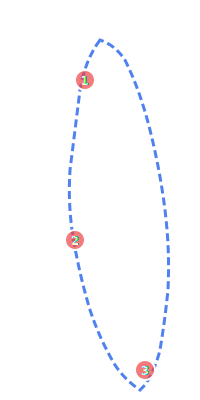

📱 AnkleCapture
足関節角度測定システム
被験者情報
被験者ID *
測定者ID
測定側 *
左足 (L)
右足 (R)
測定種別 *
足関節背屈角度
測定モード *
📱
実時間撮影
カメラで撮影
🖼️
写真導入
既存の写真を使用
📷 測定を開始
← 戻る
左足
左右切替

Pitch:
--
°
Roll:
--
°
水平仪を有効化
有効化
1
2
3
4
ステップ 1/4
足をガイド枠内に配置してください
✓ 確認
⚠️ 距離が適切ではありません
📸 撮影
← 再撮影
角度測定
📍 3点をタップして角度を測定してください
腓骨頭
外果
第5中足骨頭
測定角度:
--
°
🔄 リセット
💾 保存
データエクスポート
測定完了
被験者ID:
--
測定側:
--
角度:
--
°
測定日時:
--
エクスポート形式
📊 CSV形式でダウンロード
📄 JSON形式でダウンロード
🖼️ 画像をダウンロード
➕ 新規測定
🔶 距離確認
カメラと被験者の距離は約
3m
ですか?
💡 参考ガイド:
一般的な床タイル（80cm）≈ 約4枚分
畳 1畳の長辺 ≈ 約180cm ≈ 約1.7畳分
腕を広げた幅 ≈ 約170cm ≈ 約1.8倍
近すぎる
✓ 適切
遠すぎる